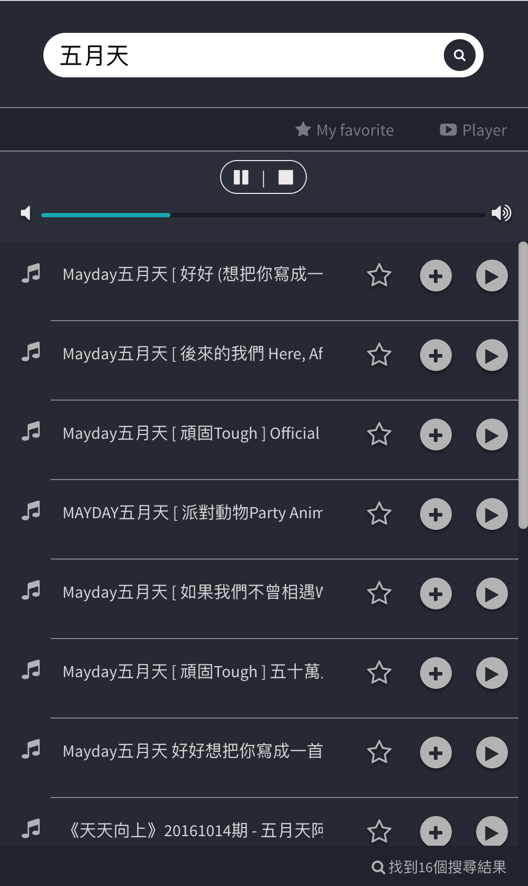
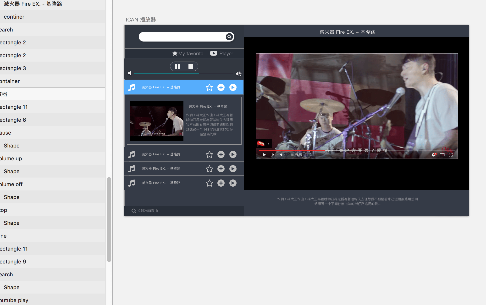
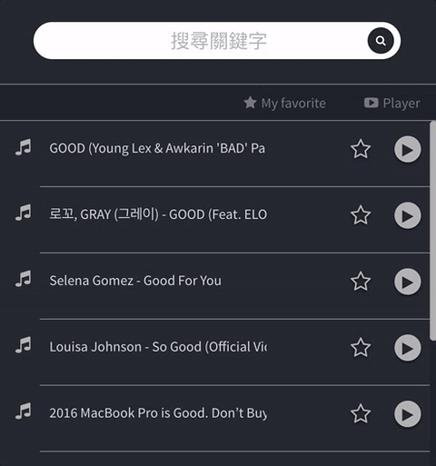
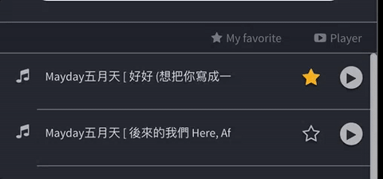
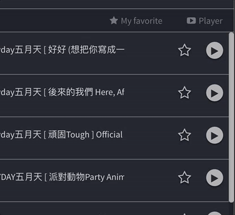
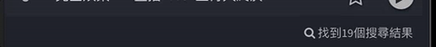

[作品]線上youtube播放器使用angular
線上youtube播放器使用angular
經過上次實驗室音響的小玩具開發後，這次要進階的往功能較詳盡的小作品邁進，一是將所學融會貫通(誤)，二則是要強化實驗室音樂播放器的使用者體驗部分。
透過上一篇[學習筆記]使用youtube search api串接建立播放器使用youtube其api這次要完整做一個播放器，可以進行更好的音樂體驗。
在考量大量api傳值的未來擴充性，及更好維護的模組化後，決定使用angular進行開發，因為功能也不太陽春，好好寫未來可以擴寫，尤其是這一陣子angular碰很多，更要將所學好好練一下，期中ＵＸ體驗ＵＩ調整部分，也花了不少功。
講這麼多不如先看看。
https://mike-zheng.github.io/NTU-ICAN-YOUTUBE-PLAYER/

介面
這次用sketch先畫了一輪，受到前輩公司開始做產品的激勵，那自己做小玩具也要認真做啊。
介面代表了使用者的第一印象，先看起來好用才會繼續用下去。

前端部分
前端部分主要使用angular用比較偏spa的方式將功能串起來，
主要寫一隻concroller，directive部分主要是用開源的，
這邊講一下用的angular directive元件：mgo-mousetrap angular-marquee youtube-embed rzModule
透過容易維護的綁定機制，把ＭＶＣ架構分離的很好，不用像上次將html寫進js裡面，不過也話說最近寫 .jade寫的很抓狂，哪有debug這麽困難的語言啊，下次一定要用ejs之類的比較像html的模組化工具啊！！
然後這次寫的factory一開始還裝會寫成service，結果沒有辦法向api戳第二次，還debug了一陣子，不過也學會了service和factory的差異，嗚嗚。
UX體驗部分
UX體驗這次花了一些力氣，包含了一些轉動小巧思，這邊簡單列幾點：
1 搜尋體驗部分

2 標題跑馬燈及選單

3 功能提示

4 搜尋功能提示

其實還有小彩蛋 例如在鍵盤打上我們實驗室的縮寫，更強的功能就會展開了，不過這邊才不要公佈給大家玩勒。
（其實就算發現了在非內網也不能用）